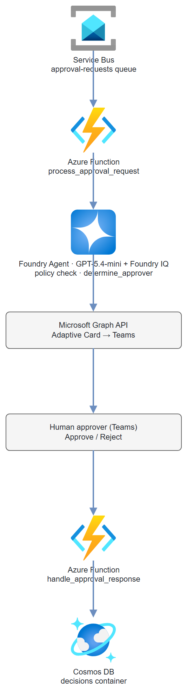

Build it yourself. This project is part of the AI Projects for Cloud Solution Architects portfolio. Full source, code, and the latest updates live in the csa-ai-projects repo on GitHub.
Some decisions shouldn't be fully automated. This guide builds a workflow where an agent handles the routing and policy checks, but a human approves or rejects via a Teams message — and every decision is logged immutably.
What You're Building
A Service Bus-triggered Azure Function kicks off a Foundry agent workflow. The agent checks policy via Foundry IQ, determines the right approver using a function call, sends that person a Teams Adaptive Card via Microsoft Graph API, and then waits. When the human responds (approve/reject), a second Function captures the decision, logs it to Cosmos DB, and sends a confirmation. Uses GPT-5.4-mini for reasoning.
Prerequisites
- Microsoft Foundry / Azure AI Services resource with Foundry IQ + GPT-5.4-mini deployed
- Azure Service Bus namespace (request queue)
- Azure Cosmos DB (for decision audit log)
- Microsoft Graph API access (Delegated or App permissions:
Chat.Create,TeamsMessage.Send) - Entra ID app registration with Graph permissions
- Azure CLI logged in (
az login) with Cognitive Services OpenAI User on the AI Services resource and Cosmos DB Built-in Data Contributor on the Cosmos account - Python 3.11+,
azure-functions,openai,azure-servicebus,azure-cosmos,msal
pip install "openai>=1.30.0" azure-identity azure-functions \
azure-servicebus azure-cosmos msal python-dotenv
Architecture

Step-by-Step Build
Step 1 — Register Entra ID app for Graph API
# Create app registration
APP_ID=$(az ad app create \
--display-name "approval-workflow-app" \
--query appId -o tsv)
# Add Microsoft Graph permissions (TeamsMessage.Send, Chat.Create)
az ad app permission add \
--id $APP_ID \
--api 00000003-0000-0000-c000-000000000000 \
--api-permissions 75359482-378d-4052-8f01-80520e7db3cd=Role \
ebf0f66e-9fb1-49e4-a278-222f76911cf4=Role
# Grant admin consent
az ad app permission admin-consent --id $APP_ID
# Create client secret
SECRET=$(az ad app credential reset --id $APP_ID --query password -o tsv)
TENANT_ID=$(az account show --query tenantId -o tsv)
Step 2 — Create Cosmos DB audit log container
az cosmosdb sql container create \
--account-name $COSMOS_ACCOUNT \
--resource-group $RG \
--database-name approval-workflow \
--name decisions \
--partition-key-path "/request_id"
Step 3 — Approver lookup function
# approver_rules.py
# In production, this would query HR systems or an LDAP directory
APPROVER_RULES = {
"purchase": {
"0-1000": "manager@company.com",
"1001-10000": "director@company.com",
"10001+": "vp@company.com"
},
"access": {
"standard": "it-manager@company.com",
"privileged": "security-officer@company.com"
},
"exception": {
"default": "compliance@company.com"
}
}
def determine_approver(request_type: str, amount: float = 0, access_level: str = "") -> dict:
"""Return approver email and display name for a request."""
rules = APPROVER_RULES.get(request_type, APPROVER_RULES["exception"])
if request_type == "purchase":
if amount <= 1000:
email = rules["0-1000"]
elif amount <= 10000:
email = rules["1001-10000"]
else:
email = rules["10001+"]
elif request_type == "access":
email = rules.get(access_level, rules.get("standard", "it-manager@company.com"))
else:
email = rules.get("default", "compliance@company.com")
return {
"approver_email": email,
"approver_name": email.split("@")[0].replace("-", " ").title(),
"approver_id": email # In production: look up Entra Object ID
}
APPROVER_TOOL_DEF = {
"name": "determine_approver",
"description": "Look up who should approve this request based on type and amount.",
"parameters": {
"type": "object",
"properties": {
"request_type": {
"type": "string",
"enum": ["purchase", "access", "exception"],
"description": "Category of the approval request"
},
"amount": {
"type": "number",
"description": "Dollar amount for purchase requests"
},
"access_level": {
"type": "string",
"enum": ["standard", "privileged"],
"description": "Access sensitivity for access requests"
}
},
"required": ["request_type"]
}
}
Step 4 — Teams message via Graph API
# graph_client.py
import os
import json
import urllib.request
import msal
def get_graph_token() -> str:
"""Get Microsoft Graph access token using client credentials."""
app = msal.ConfidentialClientApplication(
client_id=os.environ["ENTRA_CLIENT_ID"],
client_credential=os.environ["ENTRA_CLIENT_SECRET"],
authority=f"https://login.microsoftonline.com/{os.environ['ENTRA_TENANT_ID']}"
)
result = app.acquire_token_for_client(
scopes=["https://graph.microsoft.com/.default"]
)
if "access_token" not in result:
raise RuntimeError(f"Token acquisition failed: {result.get('error_description')}")
return result["access_token"]
def send_approval_card(
approver_id: str,
request_id: str,
request_summary: str,
requester_name: str,
callback_url: str
) -> str:
"""Send an Adaptive Card to the approver in Teams."""
token = get_graph_token()
# First: create or find a 1:1 chat with the approver
chat_payload = json.dumps({
"chatType": "oneOnOne",
"members": [
{
"@odata.type": "#microsoft.graph.aadUserConversationMember",
"roles": ["owner"],
"user@odata.bind": (
f"https://graph.microsoft.com/v1.0/users/{approver_id}"
)
}
]
}).encode()
req = urllib.request.Request(
"https://graph.microsoft.com/v1.0/chats",
data=chat_payload,
headers={
"Authorization": f"Bearer {token}",
"Content-Type": "application/json"
}
)
with urllib.request.urlopen(req) as resp:
chat = json.loads(resp.read())
chat_id = chat["id"]
# Send Adaptive Card
card = {
"type": "AdaptiveCard",
"$schema": "http://adaptivecards.io/schemas/adaptive-card.json",
"version": "1.4",
"body": [
{"type": "TextBlock", "size": "Large", "weight": "Bolder",
"text": "Approval Required"},
{"type": "TextBlock", "text": f"**Request ID:** {request_id}"},
{"type": "TextBlock", "text": f"**From:** {requester_name}"},
{"type": "TextBlock", "wrap": True,
"text": f"**Summary:** {request_summary}"}
],
"actions": [
{
"type": "Action.Http",
"title": "Approve",
"method": "POST",
"url": callback_url,
"body": json.dumps({
"request_id": request_id,
"decision": "approved",
"approver_id": approver_id
}),
"style": "positive"
},
{
"type": "Action.Http",
"title": "Reject",
"method": "POST",
"url": callback_url,
"body": json.dumps({
"request_id": request_id,
"decision": "rejected",
"approver_id": approver_id
}),
"style": "destructive"
}
]
}
message_payload = json.dumps({
"body": {
"contentType": "html",
"content": "<attachment id=\"approval-card\"></attachment>"
},
"attachments": [{
"id": "approval-card",
"contentType": "application/vnd.microsoft.card.adaptive",
"content": json.dumps(card)
}]
}).encode()
req2 = urllib.request.Request(
f"https://graph.microsoft.com/v1.0/chats/{chat_id}/messages",
data=message_payload,
headers={
"Authorization": f"Bearer {token}",
"Content-Type": "application/json"
}
)
with urllib.request.urlopen(req2) as resp:
msg = json.loads(resp.read())
return msg["id"]
Step 5 — Azure Functions workflow
# function_app.py
import azure.functions as func
import json, os, logging, uuid
from datetime import datetime, timezone
from azure.cosmos import CosmosClient
from azure.identity import DefaultAzureCredential, get_bearer_token_provider
from openai import AzureOpenAI
from approver_rules import determine_approver, APPROVER_TOOL_DEF
from graph_client import send_approval_card
app = func.FunctionApp()
credential = DefaultAzureCredential()
# One Responses-API client drives the policy agent (Foundry IQ file_search +
# the determine_approver function tool). azure-ai-projects 2.x removed the
# Assistants threads/runs surface; the Responses API replaces it.
client = AzureOpenAI(
azure_endpoint=os.environ["AZURE_OPENAI_ENDPOINT"],
azure_ad_token_provider=get_bearer_token_provider(
credential, "https://cognitiveservices.azure.com/.default"),
api_version="2025-04-01-preview",
)
cosmos = CosmosClient(
url=os.environ["COSMOS_ENDPOINT"],
credential=credential
)
decisions = cosmos.get_database_client("approval-workflow").get_container_client("decisions")
CALLBACK_BASE_URL = os.environ["FUNCTION_APP_BASE_URL"]
MODEL = os.environ.get("APPROVAL_MODEL", "gpt-5.4-mini")
# Responses API tools: Foundry IQ grounding via file_search + a flat function tool.
TOOLS = [
{"type": "file_search", "vector_store_ids": [os.environ["POLICY_VECTOR_STORE_ID"]]},
{"type": "function", **APPROVER_TOOL_DEF},
]
INSTRUCTIONS = (
"You are an approval workflow agent. For each request:\n"
"1. Check the policy documents to determine if the request is in-policy\n"
"2. If in-policy, call determine_approver() to find the right approver\n"
"3. Summarize the request in 2 sentences for the approver\n\n"
"If the request violates policy, return {is_in_policy: false, reason: '...'}"
)
@app.service_bus_queue_trigger(
arg_name="msg",
queue_name="approval-requests",
connection="SERVICE_BUS_CONNECTION_STRING"
)
def process_approval_request(msg: func.ServiceBusMessage):
payload = json.loads(msg.get_body().decode())
request_id = payload.get("request_id", str(uuid.uuid4()))
logging.info(f"Processing approval request: {request_id}")
# file_search runs server-side; only determine_approver needs a round-trip.
response = client.responses.create(
model=MODEL,
instructions=INSTRUCTIONS,
input=f"Process this approval request:\n\n{json.dumps(payload, indent=2)}",
tools=TOOLS,
)
approver_info = {}
for _ in range(8): # safety cap on function-call rounds
fn_calls = [it for it in response.output
if getattr(it, "type", None) == "function_call"]
if not fn_calls:
break
tool_outputs = []
for call in fn_calls:
if call.name == "determine_approver":
args = json.loads(call.arguments or "{}")
approver_info = determine_approver(**args)
result = json.dumps(approver_info)
else:
result = json.dumps({"error": f"Unknown function: {call.name}"})
tool_outputs.append({
"type": "function_call_output",
"call_id": call.call_id,
"output": result,
})
response = client.responses.create(
model=MODEL,
previous_response_id=response.id,
input=tool_outputs,
tools=TOOLS,
)
agent_summary = response.output_text
# Record pending decision
decisions.upsert_item({
"id": request_id,
"request_id": request_id,
"status": "pending",
"payload": payload,
"approver": approver_info,
"agent_summary": agent_summary,
"created_at": datetime.now(timezone.utc).isoformat()
})
# Send Teams card to approver
if approver_info.get("approver_id"):
callback_url = f"{CALLBACK_BASE_URL}/api/handle_approval?code={os.environ['FUNC_KEY']}"
send_approval_card(
approver_id=approver_info["approver_id"],
request_id=request_id,
request_summary=agent_summary[:300],
requester_name=payload.get("requester_name", "Unknown"),
callback_url=callback_url
)
logging.info(f"Teams card sent to {approver_info['approver_id']}")
@app.route(route="handle_approval", methods=["POST"])
def handle_approval_response(req: func.HttpRequest) -> func.HttpResponse:
"""Called by Teams Adaptive Card button press."""
body = req.get_json()
request_id = body.get("request_id")
decision = body.get("decision")
approver_id = body.get("approver_id")
if not all([request_id, decision, approver_id]):
return func.HttpResponse("Missing fields", status_code=400)
# Update decision record
item = decisions.read_item(item=request_id, partition_key=request_id)
item.update({
"status": decision,
"decided_at": datetime.now(timezone.utc).isoformat(),
"decided_by": approver_id
})
decisions.upsert_item(item)
logging.info(f"Decision recorded: {request_id} → {decision}")
return func.HttpResponse(
json.dumps({"status": "recorded", "decision": decision}),
status_code=200,
mimetype="application/json"
)
Test It
# Send a test approval request to Service Bus
import json
from azure.servicebus import ServiceBusClient, ServiceBusMessage
sb = ServiceBusClient.from_connection_string(os.environ["SERVICE_BUS_CONNECTION_STRING"])
with sb:
sender = sb.get_queue_sender("approval-requests")
with sender:
msg = {
"request_id": "REQ-2024-0042",
"request_type": "purchase",
"amount": 3500.00,
"requester_name": "Alex Johnson",
"requester_email": "alex.johnson@company.com",
"description": "Ergonomic desk chair for home office setup",
"business_justification": "Current chair causing back issues affecting productivity"
}
sender.send_messages(ServiceBusMessage(json.dumps(msg)))
print("Test request sent")
Check Cosmos DB for the pending decision, then simulate the Teams approval:
curl -X POST "http://localhost:7071/api/handle_approval" \
-H "Content-Type: application/json" \
-d '{"request_id":"REQ-2024-0042","decision":"approved","approver_id":"director@company.com"}'
Common Mistakes
- Reaching for the old Assistants
agentsAPI.azure-ai-projects2.x removed the threads/runs Assistants surface —AIProjectClienthas no.agents, andFunctionTool/FileSearchTool/PromptAgentDefinition/MessageRole/SubmitToolOutputsActionno longer drive a run. Useclient.responses.create(..., tools=[{"type":"file_search", "vector_store_ids":[...]}, {"type":"function", ...}])and a function-call loop keyed offprevious_response_id, as shown above. - Adaptive Card Action.Http not supported in all Teams clients.
Action.Httprequires the Teams client to support it — older desktop clients may not. Test on both desktop and mobile Teams. - Graph API Chat creation fails with 403. Ensure
Chat.Createpermission was granted admin consent. Check withaz ad app permission list --id $APP_ID. - Cosmos DB optimistic concurrency. Two approvers clicking simultaneously can cause conflicts. Add an
_etagcheck when updating the decision record.
Extend It
- Escalation timer: If no decision within 48 hours, an Azure Function timer escalates the request to the approver's manager automatically.
- Approval chain: For high-value requests (>$50K), require two sequential approvals. Store the approval chain in Cosmos DB as an array and gate each step.
- Power Apps UI: Replace the Teams card with a Power Apps canvas app that shows all pending approvals in a dashboard, with bulk-approve capability for managers.